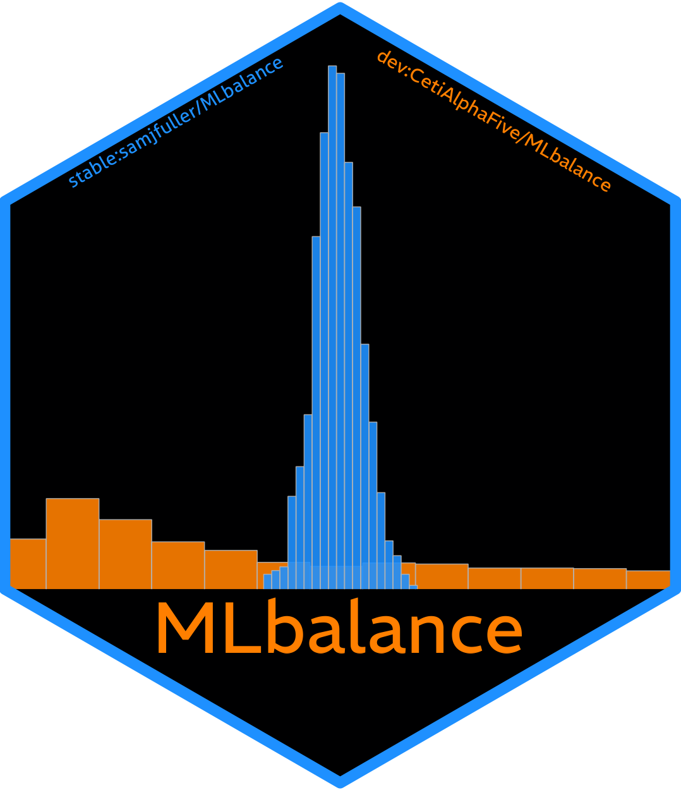
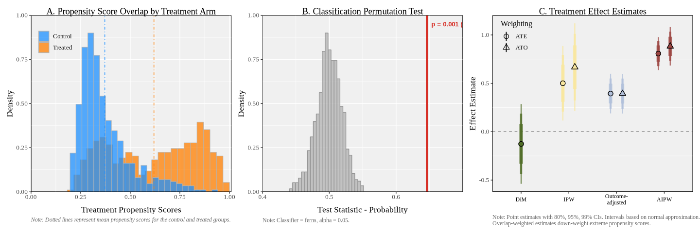

Machine Learning Balance 
{kind=link}
MLbalance is a suite of machine learning balance tests and estimation tools for experimental and observational data, including a fast implementation of the classification permutation test (Johann Gagnon-Bartsch and Yotam Shem-Tov, 2019). The purpose of this suite is to detect unintentional failures of random assignment, data fabrication, or simple covariate imbalance in random or, as-if random, experimental and observational designs. These tools are meant to work “off-the-shelf” but are also customizable for advanced users.
This package is in beta, any recommendations or comments welcome in the issues section.
Installation
You can install the development version of MLbalance from GitHub with:
# install.packages("pak")
pak::pak("CetiAlphaFive/MLbalance")Example
Here is a basic example demonstrating the suite of machine learning balance tests on a simulated binary treatment DGP with multidimensional contamination of the treatment assignment.
library(MLbalance)
set.seed(1995)
# binary toy example
n <- 1000
p <- 10
X <- matrix(rnorm(n*p,0,1),n,p)
W <- rbinom(n, 1, ifelse(.021 + abs(.4*X[,4] - .5*X[,8]) < 1, .021 + abs(.4*X[,4] - .5*X[,8]), 1)) #imbalance over X4 and X8
Y <- W + 0.8 * X[,1] - 0.6 * X[,2] + 1.2 * X[,3]^2 + 1.5 * X[,4] * X[,8] + 0.5 * X[,6] * X[,7] - 0.4 * abs(X[,9]) + 0.3 * X[,10] * X[,1] + rnorm(n, 0, .5) #true treatment effect = 1, annoying DGP
df <- data.frame(Y = Y,W = W,X = X)
# execute the balance tests and estimate treatment effects
b <- balance(Y,W,X); b
#> | | | 0% | | | 1% | |= | 1% | |= | 2% | |== | 2% | |== | 3% | |== | 4% | |=== | 4% | |=== | 5% | |==== | 5% | |==== | 6% | |===== | 6% | |===== | 7% | |===== | 8% | |====== | 8% | |====== | 9% | |======= | 9% | |======= | 10% | |======= | 11% | |======== | 11% | |======== | 12% | |========= | 12% | |========= | 13% | |========= | 14% | |========== | 14% | |========== | 15% | |=========== | 15% | |=========== | 16% | |============ | 16% | |============ | 17% | |============ | 18% | |============= | 18% | |============= | 19% | |============== | 19% | |============== | 20% | |============== | 21% | |=============== | 21% | |=============== | 22% | |================ | 22% | |================ | 23% | |================ | 24% | |================= | 24% | |================= | 25% | |================== | 25% | |================== | 26% | |=================== | 26% | |=================== | 27% | |=================== | 28% | |==================== | 28% | |==================== | 29% | |===================== | 29% | |===================== | 30% | |===================== | 31% | |====================== | 31% | |====================== | 32% | |======================= | 32% | |======================= | 33% | |======================= | 34% | |======================== | 34% | |======================== | 35% | |========================= | 35% | |========================= | 36% | |========================== | 36% | |========================== | 37% | |========================== | 38% | |=========================== | 38% | |=========================== | 39% | |============================ | 39% | |============================ | 40% | |============================ | 41% | |============================= | 41% | |============================= | 42% | |============================== | 42% | |============================== | 43% | |============================== | 44% | |=============================== | 44% | |=============================== | 45% | |================================ | 45% | |================================ | 46% | |================================= | 46% | |================================= | 47% | |================================= | 48% | |================================== | 48% | |================================== | 49% | |=================================== | 49% | |=================================== | 50% | |=================================== | 51% | |==================================== | 51% | |==================================== | 52% | |===================================== | 52% | |===================================== | 53% | |===================================== | 54% | |====================================== | 54% | |====================================== | 55% | |======================================= | 55% | |======================================= | 56% | |======================================== | 56% | |======================================== | 57% | |======================================== | 58% | |========================================= | 58% | |========================================= | 59% | |========================================== | 59% | |========================================== | 60% | |========================================== | 61% | |=========================================== | 61% | |=========================================== | 62% | |============================================ | 62% | |============================================ | 63% | |============================================ | 64% | |============================================= | 64% | |============================================= | 65% | |============================================== | 65% | |============================================== | 66% | |=============================================== | 66% | |=============================================== | 67% | |=============================================== | 68% | |================================================ | 68% | |================================================ | 69% | |================================================= | 69% | |================================================= | 70% | |================================================= | 71% | |================================================== | 71% | |================================================== | 72% | |=================================================== | 72% | |=================================================== | 73% | |=================================================== | 74% | |==================================================== | 74% | |==================================================== | 75% | |===================================================== | 75% | |===================================================== | 76% | |====================================================== | 76% | |====================================================== | 77% | |====================================================== | 78% | |======================================================= | 78% | |======================================================= | 79% | |======================================================== | 79% | |======================================================== | 80% | |======================================================== | 81% | |========================================================= | 81% | |========================================================= | 82% | |========================================================== | 82% | |========================================================== | 83% | |========================================================== | 84% | |=========================================================== | 84% | |=========================================================== | 85% | |============================================================ | 85% | |============================================================ | 86% | |============================================================= | 86% | |============================================================= | 87% | |============================================================= | 88% | |============================================================== | 88% | |============================================================== | 89% | |=============================================================== | 89% | |=============================================================== | 90% | |=============================================================== | 91% | |================================================================ | 91% | |================================================================ | 92% | |================================================================= | 92% | |================================================================= | 93% | |================================================================= | 94% | |================================================================== | 94% | |================================================================== | 95% | |=================================================================== | 95% | |=================================================================== | 96% | |==================================================================== | 96% | |==================================================================== | 97% | |==================================================================== | 98% | |===================================================================== | 98% | |===================================================================== | 99% | |======================================================================| 99% | |======================================================================| 100%
#> Warning in grf::average_treatment_effect(cf_ipw, target.sample = "all"):
#> Estimated treatment propensities go as high as 1.007 which means that treatment
#> effects for some treated units may not be well identified. In this case, using
#> `target.sample=control` may be helpful.
#> Warning in grf::average_treatment_effect(cf, target.sample = "all"): Estimated
#> treatment propensities go as high as 1.007 which means that treatment effects
#> for some treated units may not be well identified. In this case, using
#> `target.sample=control` may be helpful.
#>
#> Balance Assessment
#> ------------------------------------------------------------
#> Control: '0'
#> Balance: p = 0.0010 [FAIL]
#>
#> Treatment Effect Estimates
#> ------------------------------------------------------------
#> DiM (unadjusted): -0.1265 (SE: 0.1599)
#> Propensity-Adjusted: 0.5011 (SE: 0.1496)
#> Outcome-Adjusted: 0.4042 (SE: 0.0799)
#> Doubly-Robust (AIPW): 0.8191 (SE: 0.0660)
#>
#> OVERLAP WARNING: 16 observations have extreme propensity scores.
#>
#> Use summary() for full details, plot() to visualize.One can quickly evaluate the output of the tests using the built in plot and summary functions.
To plot, simply execute:
b |> plot()
To summarize, simply execute:
b |> summary()
#>
#> ========================================================================
#> COVARIATE BALANCE ASSESSMENT
#> ========================================================================
#>
#> 1. SAMPLE
#> ------------------------------------------------------------------------
#> Observations: 1000
#> Control ('0'): 504 (50.4%)
#> Treatment: 496 (49.6%)
#>
#> 2. CLASSIFICATION PERMUTATION TEST
#> ------------------------------------------------------------------------
#> Classifier: ferns
#> Permutations: 1000
#> Test statistic: 0.6461
#> Null mean (SD): 0.4994 (0.0190)
#> P-value: 0.0010
#> Alpha: 0.05
#> Result: FAIL
#>
#> Propensity scores (boosted regression forest):
#> Real Null
#> ----------------------------------------
#> Mean: 0.4947 0.4966
#> SD: 0.2207 0.0204
#> Min: 0.1822 0.4302
#> Max: 1.0071 0.5671
#> ----------------------------------------
#> Diff. in means: -0.0019
#> Ratio of SDs: 10.8194
#>
#> 3. INTERPRETATION
#> ------------------------------------------------------------------------
#> The classification permutation test rejects the null hypothesis,
#> indicating that treatment and control groups differ in their
#> covariate distributions. The classifier can distinguish between
#> groups better than random chance.
#>
#> ========================================================================
#> TREATMENT EFFECT ESTIMATION
#> ========================================================================
#>
#> 4. ESTIMATES
#> ------------------------------------------------------------------------
#> Estimator Estimate SE 95% CI
#> ---------------------------------------------------------------------
#> DiM (unadjusted) -0.1265 0.1599 [ -0.4400, 0.1869]
#> Propensity-Adjusted 0.5011 0.1496 [ 0.2079, 0.7944]
#> Outcome-Adjusted 0.4042 0.0799 [ 0.2477, 0.5608]
#> Doubly-Robust (AIPW) 0.8191 0.0660 [ 0.6897, 0.9485]
#>
#> OVERLAP WARNING: 16 observations have extreme propensity scores
#> (< 0.05 or > 0.95). Overlap-weighted estimates down-weight these:
#>
#> Estimator Estimate SE 95% CI
#> ---------------------------------------------------------------------
#> Propensity-Adjusted (OW) 0.6670 0.1757 [ 0.3226, 1.0114]
#> Outcome-Adjusted (OW) 0.4032 0.0800 [ 0.2465, 0.5600]
#> Doubly-Robust (OW) 0.8940 0.0769 [ 0.7432, 1.0447]
#>
#>
#> 5. ESTIMATOR DIVERGENCE TESTS
#> ------------------------------------------------------------------------
#> Comparison Difference SE(diff) z-stat p-value
#> ----------------------------------------------------------------------
#> DiM vs Propensity-Adjusted -0.6277 0.0692 -9.071 0.0000 *
#> DiM vs Outcome-Adjusted -0.5308 0.1241 -4.276 0.0000 *
#> DiM vs Doubly-Robust -0.9456 0.1313 -7.201 0.0000 *
#> Prop.-Adj. vs Doubly-Robust -0.3179 0.1195 -2.661 0.0078 *
#> * p < 0.05
#>
#> Significant divergences:
#>
#> DiM vs Propensity-Adjusted: Propensity score adjustment moves the ATE
#> estimate upward by 0.6277 units (z = -9.071, p = 0.0000), suggesting that
#> finite-sample covariate imbalance shifts the naive estimate downward.
#>
#> DiM vs Outcome-Adjusted: Outcome regression adjustment moves the ATE
#> estimate upward by 0.5308 units (z = -4.276, p = 0.0000), indicating that
#> covariate-outcome associations shift the naive estimate downward.
#>
#> DiM vs Doubly-Robust (AIPW): Jointly adjusting for treatment propensity
#> and the outcome surface moves the ATE estimate upward by 0.9456 units
#> (z = -7.201, p = 0.0000), a larger correction than either adjustment alone.
#>
#> Propensity-Adjusted vs Doubly-Robust: Augmenting propensity score
#> adjustment with outcome modeling moves the ATE estimate upward by an
#> additional 0.3179 units (z = -2.661, p = 0.0078), indicating that outcome
#> regression captures additional covariate-outcome associations beyond
#> reweighting alone.
#>
#> 6. ESTIMATOR GUIDE
#> ------------------------------------------------------------------------
#> Nuisance models (propensity and outcome) are fit using honest, tuned
#> boosted regression forests (grf::boosted_regression_forest;
#> honesty = TRUE, tune.parameters = "all"); all predictions are
#> out-of-bag. Treatment effects are estimated via grf::causal_forest
#> (2,000 trees) and grf::average_treatment_effect (target = "all").
#> Standard errors use the infinitesimal jackknife (IJ) influence
#> function. DiM SEs use Neyman's separate-variance (Welch) formula.
#> All confidence intervals use a normal approximation.
#>
#> DiM (unadjusted)
#> E[Y|W=1] - E[Y|W=0]. No covariate adjustment.
#>
#> Propensity-Adjusted
#> W.hat = boosted-RF propensity scores; Y.hat = mean(Y) (constant).
#> Corrects for covariate imbalance without outcome modeling.
#>
#> Outcome-Adjusted
#> W.hat = mean(W) (constant); Y.hat = boosted-RF outcome predictions.
#> Adjusts for covariate-outcome associations without propensity
#> reweighting.
#>
#> Doubly-Robust (AIPW)
#> W.hat and Y.hat both estimated from boosted RFs. Consistent if
#> either nuisance model is correctly specified.
#>
#> Overlap-Weighted (OW) Estimates
#> When propensity scores approach 0 or 1, IPW-type estimators become
#> unstable. Overlap-weighted estimates (Li, Morgan & Zaslavsky, 2018)
#> target the ATE for the overlap population by down-weighting units
#> with extreme propensity scores. Computed via
#> grf::average_treatment_effect(target.sample = "overlap").